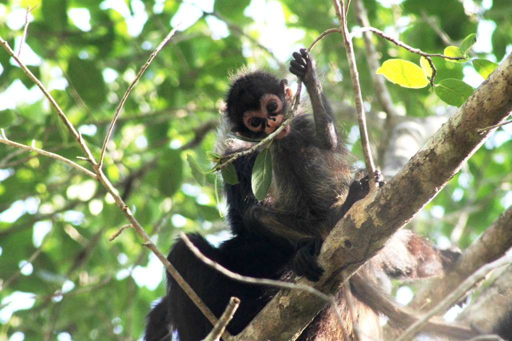

# Nombre de la especie
especie <- "Ateles geoffroyi"
# Desplazamiento (offset) para delimitar el área de estudio
desplazamiento = 5
# Resolución espacial de los datos climáticos
resolucion = 10
# SSP
ssp <- "585"
# GCM
gcm <- "MIROC6"
# Proporción de datos de entreamiento a utilizar en el modelo
proporcion_entrenamiento = 0.7Nicho ecologico bajo condiciones actuales y de escenarios futuros
Distribución del Mono Araña (Ateles Geoffroyi)

Determinación de la especie a evaluar
Para este proyecto realizaremos la evaluación de la distribución de la especie , tanto para el escenario actual como futuro. Para el caso del escenario futuro haremos uso del modelo MIROC6. Este modelo se destaca por su alta resolución, capacidad para reproducir patrones climáticos relevantes, integración efectiva de componentes del sistema climático, y su uso en proyecciones decenales. Estas características lo convierten en una opción preferida para estudios sobre el cambio climático, especialmente en regiones sensibles como Centroamérica.
# Colección de paquetes de Tidyverse
library(tidyverse)
# Estilos para ggplot2
library(ggthemes)
# Paletas de colores de RColorBrewer
library(RColorBrewer)
# Paletas de colores de viridis
library(viridisLite)
# Gráficos interactivos
library(plotly)
# Manejo de datos vectoriales
library(sf)
# Manejo de datos raster
library(terra)
# Manejo de datos raster
library(raster)
# Mapas interactivos
library(leaflet)
# Acceso a datos en GBIF
library(rgbif)
# Acceso a datos climáticos
library(geodata)
# Modelado de distribución de especies
library(dismo)
#
library(rJava)Obtención de datos de presencia
# Consultar el API de GBIF
respuesta <- occ_search(
scientificName = especie,
hasCoordinate = TRUE, #solo los que tengan coordenadas
hasGeospatialIssue = FALSE, #se usa para que no tenga problemas espaciales
limit = 10000
)
# Extraer datos de presencia
presencia <- respuesta$data# Guardar los datos de presencia en un archivo CSV
write_csv(presencia, 'presencia.csv')# Leer en un dataframe los datos de presencia de un archivo CSV
presencia <- read_csv('presencia.csv')
# Crear un objeto sf a partir del dataframe
presencia <- st_as_sf(
presencia,
coords = c("decimalLongitude", "decimalLatitude"),
remove = FALSE, # conservar las columnas de las coordenadas
crs = 4326
)Delimitación del área de estudio
# Delimitar la extensión del área de estudio
area_estudio <- ext(
min(presencia$decimalLongitude) - desplazamiento,
max(presencia$decimalLongitude) + desplazamiento,
min(presencia$decimalLatitude) - desplazamiento,
max(presencia$decimalLatitude) + desplazamiento
)Obtener datos de clima actual (1970-2000)
# Obtener datos climáticos actuales
clima_actual <- worldclim_global(
var = 'bio',
res = resolucion,
path = tempdir()
)
# Recortar los datos climáticos para el área de estudio
clima_actual <- crop(clima_actual, area_estudio)
# Desplegar nombres de las variables climáticas
names(clima_actual) [1] "wc2.1_10m_bio_1" "wc2.1_10m_bio_2" "wc2.1_10m_bio_3" "wc2.1_10m_bio_4"
[5] "wc2.1_10m_bio_5" "wc2.1_10m_bio_6" "wc2.1_10m_bio_7" "wc2.1_10m_bio_8"
[9] "wc2.1_10m_bio_9" "wc2.1_10m_bio_10" "wc2.1_10m_bio_11" "wc2.1_10m_bio_12"
[13] "wc2.1_10m_bio_13" "wc2.1_10m_bio_14" "wc2.1_10m_bio_15" "wc2.1_10m_bio_16"
[17] "wc2.1_10m_bio_17" "wc2.1_10m_bio_18" "wc2.1_10m_bio_19"Obtención de datos de clima futuros
# Obtener datos climáticos para escenario futuro
clima_futuro <- cmip6_world(
var = "bioc",
res = resolucion,
ssp = ssp,
model = gcm,
time = "2041-2060",
path = tempdir()
)
# Recortar los datos climáticos para el área de estudio
clima_futuro <- crop(clima_futuro, area_estudio)
# Desplegar nombres de las variables
names(clima_futuro) [1] "bio01" "bio02" "bio03" "bio04" "bio05" "bio06" "bio07" "bio08" "bio09"
[10] "bio10" "bio11" "bio12" "bio13" "bio14" "bio15" "bio16" "bio17" "bio18"
[19] "bio19"Modelización y generación de conjuntos de datos de entrenamiento y evaluación
# Crear dataframe con columnas de longitud y latitud
coordenadas_presencia <- data.frame(
decimalLongitude = presencia$decimalLongitude,
decimalLatitude = presencia$decimalLatitude
)
# Eliminar coordenadas duplicadas
coordenadas_presencia <- unique(coordenadas_presencia)# Establecer una "semilla" para garantizar que la selección aleatoria sea reproducible
set.seed(123)
# Cantidad de registros de presencia
n_presencia <- nrow(coordenadas_presencia)
# Con sample(), se selecciona aleatoriamente una proporción (ej. 0.7)
# de los índices de los datos de presencia para el conjunto de entrenamiento
indices_entrenamiento <- sample(
1:n_presencia,
size = round(proporcion_entrenamiento * n_presencia)
)
# Crear el subconjunto de entrenamiento utilizando los índices seleccionados
entrenamiento <- coordenadas_presencia[indices_entrenamiento, ]
# Crear el subconjunto de evaluación con los datos restantes
evaluacion <- coordenadas_presencia[-indices_entrenamiento, ]Modelo con clima actual
# Los datos de clima deben convertirse al formato que usa el paquete raster
# debido a es este el que acepta el paquete dismo
clima_actual <- raster::stack(clima_actual)
# Generar el modelo clima actual
modelo_actual <- maxent(x = clima_actual, p = entrenamiento)
# Aplicar el modelo entrenado al clima actual
prediccion_actual <- predict(modelo_actual, clima_actual)Evaluación modelo actual
# terra::extract() extrae los valores del raster de predicción
# en las coordenadas de evaluación
# eval_pres almacena los valores de idoneidad predichos
# en los puntos de evaluación de presencia
eval_pres <- terra::extract(
prediccion_actual,
evaluacion[, c('decimalLongitude', 'decimalLatitude')]
)
# Generar puntos aleatorios dentro del área de estudio definida.
# Estos puntos se asumen como ausencias de la especie.
ausencias <- randomPoints(mask = clima_actual, n = 1000)
# eval_aus almacena los valores de idoneidad predichos
# en los puntos de ausencia
eval_aus <- terra::extract(
prediccion_actual,
ausencias
)
# Generar estadísticas de evaluación del modelo
resultado_evaluacion <- evaluate(p = eval_pres, a = eval_aus)Generación de curva ROC Y AUC de modelo del clima actual
# Datos para graficar la curva ROC
datos_roc <- data.frame(
FPR = resultado_evaluacion@FPR,
TPR = resultado_evaluacion@TPR,
Umbral = resultado_evaluacion@t
)
# Valor AUC
auc <- resultado_evaluacion@auc
# Gráfico ggplot2
grafico_ggplot2 <-
ggplot(
datos_roc,
aes(
x = FPR,
y = TPR,
u = Umbral
)
) +
geom_line(
color = "blue",
size = 1
) +
geom_abline(slope = 1, intercept = 0, linetype = "dashed", color = "red") +
labs(title = paste("Curva ROC (AUC =", round(auc, 3), ")"),
x = "Tasa de falsos positivos (FPR)",
y = "Tasa de verdaderos positivos (TPR)") +
theme_minimal()
# Gráfico plotly
ggplotly(grafico_ggplot2) |>
config(locale = 'es')Modelo con clima futuro
# Convertir variables climáticas futuras al formato raster stack
clima_futuro_raster <- raster::stack(clima_futuro)
# Asegurar que las variables tengan los mismos nombres y orden
names(clima_futuro_raster) <- names(clima_actual)
# Proyectar el modelo al clima futuro
prediccion_futuro <- predict(modelo_actual, clima_futuro_raster)Mapa de diferencia y mapa de idoneidad del hábitat para clima futuro y clima actual
El presente código nos permite observar la distribución idónea del hábitad de la especie Ateles geoffroyi para el clima actual y futuro. Así mismo muestra el mapa de diferencia que calcula la diferencia entre la predicción actual menos la predicción futura de la distribución idónea de la especie. El mapa de diferencias nos permite visualizar de manera global las zonas donde se contará con mayor probabilidad de encontrar a la especie bajo condiciones climáticas promedio. Así mismo, nos permite plantear proyectos de mitigación en zonas donde se proyecta la pérdida de la especie Ateles geoffroyi.
# Calcular la diferencia
diferencia <- prediccion_futuro - prediccion_actual# Paleta de colores del modelo con clima actual
colores_modelo_actual <- colorNumeric(
palette = c("white", "black"),
values(prediccion_actual),
na.color = "transparent"
)
# Paleta de colores del modelo con clima futuro
colores_modelo_futuro <- colorNumeric(
palette = c("white", "black"),
values(prediccion_futuro),
na.color = "transparent"
)
# Crear paleta de colores para la diferencia
paleta_diferencia <- colorNumeric(
palette = c("red", "white", "blue"),
domain = c(min(values(diferencia), na.rm = TRUE), max(values(diferencia), na.rm = TRUE)),
na.color = "transparent"
)
# Mapa de la diferencia
leaflet() |>
addTiles(group = "Mapa general") |>
addProviderTiles(
providers$Esri.WorldImagery,
group = "Imágenes satelitales"
) |>
addProviderTiles(
providers$CartoDB.Positron,
group = "Mapa blanco"
) |>
addRasterImage(
prediccion_actual,
colors = colores_modelo_actual,
opacity = 0.6,
group = "Modelo con clima actual",
) |>
addRasterImage(
prediccion_futuro,
colors = colores_modelo_futuro,
opacity = 0.6,
group = "Modelo con clima futuro",
) |>
addRasterImage(
diferencia,
colors = paleta_diferencia,
opacity = 0.6,
group = "Diferencia",
) |>
addLegend(
title = "Modelo con clima actual",
values = values(prediccion_actual),
pal = colores_modelo_actual,
position = "bottomright",
group = "Modelo con clima actual"
) |>
addLegend(
title = "Modelo con clima futuro",
values = values(prediccion_futuro),
pal = colores_modelo_futuro,
position = "bottomright",
group = "Modelo con clima futuro"
) |>
addLegend(
title = "Diferencia",
values = values(diferencia),
pal = paleta_diferencia,
position = "bottomleft",
group = "Diferencia"
) |>
addLayersControl(
# control de capas
baseGroups = c("Mapa general", "Imágenes satelitales", "Mapa blanco"),
overlayGroups = c(
"Modelo con clima actual",
"Modelo con clima futuro",
"Diferencia"
)
) |>
hideGroup("Modelo con clima actual") |>
hideGroup("Modelo con clima futuro")Warning in colors(.): Some values were outside the color scale and will be
treated as NAMapa interactivo binario de distribución de la especie Ateles geoffroyi
# Definir el umbral
umbral <- 0.5
# Crear el raster binario ()
prediccion_binaria_diferencia <- (diferencia >= umbral) * 1
prediccion_binaria_actual <- (prediccion_actual >= umbral) * 1
prediccion_binaria_futuro <- (prediccion_futuro >= umbral) * 1
# Crear la paleta de colores para el raster binario de la diferencia
colores_prediccion_binaria_diferencia <- colorFactor(
palette = c("transparent", "blue"), # "transparent" para las áreas no adecuadas
domain = c(0, 1),
na.color = "transparent"
)
# Crear la paleta de colores para el raster binario actual
colores_prediccion_binaria_actual <- colorFactor(
palette = c("transparent", "blue"), # "transparent" para las áreas no adecuadas
domain = c(0, 1),
na.color = "transparent"
)
# Crear la paleta de colores para el raster binario futuro
colores_prediccion_binaria_futuro <- colorFactor(
palette = c("transparent", "blue"), # "transparent" para las áreas no adecuadas
domain = c(0, 1),
na.color = "transparent"
)
# Mapa
leaflet() |>
addTiles(group = "Mapa general") |>
addProviderTiles(
providers$Esri.WorldImagery,
group = "Imágenes satelitales"
) |>
addProviderTiles(
providers$CartoDB.Positron,
group = "Mapa blanco"
) |>
addRasterImage(
prediccion_binaria_diferencia,
colors = colores_prediccion_binaria_diferencia,
opacity = 0.6,
group = "Modelo de distribución binario de la diferencia",
) |>
addRasterImage(
prediccion_binaria_actual,
colors = colores_prediccion_binaria_actual,
opacity = 0.6,
group = "Modelo de distribución binario actual",
) |>
addRasterImage(
prediccion_binaria_futuro,
colors = colores_prediccion_binaria_futuro,
opacity = 0.6,
group = "Modelo de distribución binario futuro",
) |>
addCircleMarkers(
data = presencia,
stroke = FALSE,
radius = 3,
fillColor = 'red',
fillOpacity = 1,
popup = paste(
paste0("<strong>País: </strong>", presencia$country),
paste0("<strong>Localidad: </strong>", presencia$locality),
paste0("<strong>Fecha: </strong>", presencia$eventDate),
paste0("<strong>Fuente: </strong>", presencia$institutionCode),
paste0("<a href='", presencia$occurrenceID, "'>Más información</a>"),
sep = '<br/>'
),
group = "Registros de Ateles geoffroyi"
) |>
addLegend(
title = "Modelo de distribución binario de la diferencia",
labels = c("Ausencia", "Presencia"),
colors = c("transparent", "blue"),
position = "bottomright",
group = "Modelo de distribución binario de la diferencia"
) |>
addLegend(
title = "Modelo de distribución binario actual",
labels = c("Ausencia", "Presencia"),
colors = c("transparent", "blue"),
position = "bottomright",
group = "Modelo de distribución binario actual"
) |>
addLegend(
title = "Modelo de distribución binario futuro",
labels = c("Ausencia", "Presencia"),
colors = c("transparent", "blue"),
position = "bottomright",
group = "Modelo de distribución binario futuro"
) |>
addLayersControl(
baseGroups = c("Mapa general", "Imágenes satelitales", "Mapa blanco"),
overlayGroups = c(
"Modelo de distribución binario de la diferencia",
"Modelo de distribución binario actual",
"Modelo de distribución binario futuro",
"Registros de Ateles geoffroyi"
)
) |>
hideGroup("Modelo de distribución binario actual") |>
hideGroup("Modelo de distribución binario futuro")El mapa binario bajo un umbral de 0.5 nos permite clasificar la distribución de la especie Ateles geoffroyi bajo un rango de presencia y ausencia, que permite observar de manera más práctica y binaria la distribución de la especie.